片岡守｜第2期 プロモーション素材集
Claude特化型「AI顧問のはじめかた」（第2期）の2つのファネルで使う素材です。個別原稿は工程と種別から選べます。
第1ファネル：AI顧問のはじめかた（体験セミナー→個別説明会）
第1ファネルの全体フロー
体験セミナーから個別説明会へ進む流れです。関連素材は各ページの下で開けます。
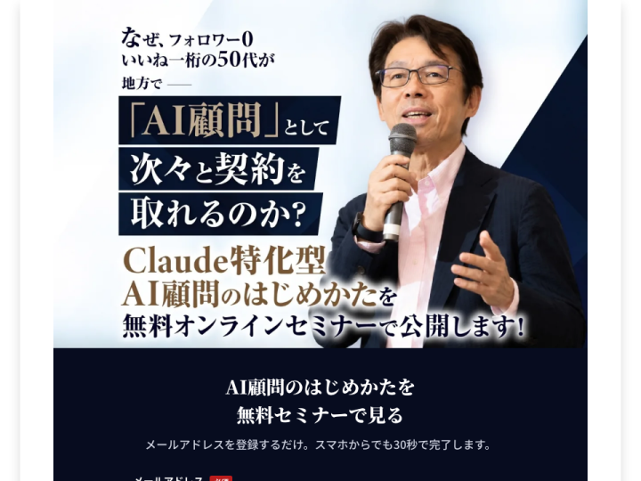
登録入口（Meta広告とハウスでページだけが違い、この先の流れは同じ）
ページ・原稿を開く ↓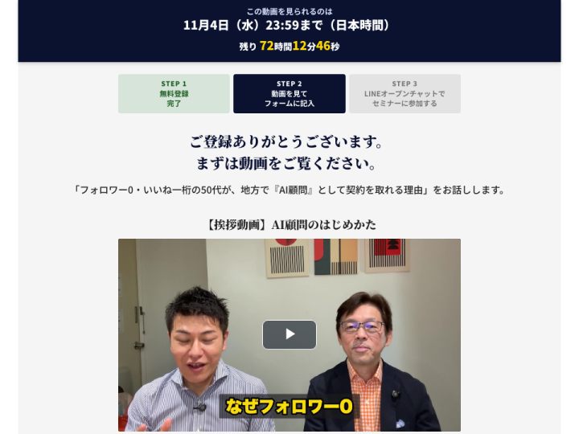
挨拶動画とアンケート
ページ・原稿を開く ↓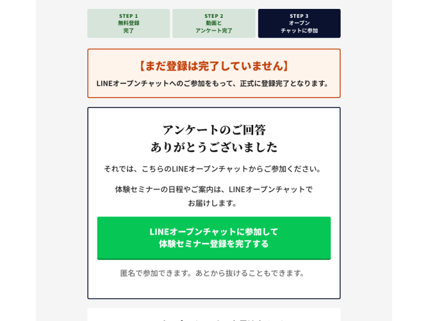
LINEオープンチャットへの参加案内
ページ・原稿を開く ↓Zoomでライブ｜11月4日（水）12:00〜
ページ・原稿を開く ↓Zoomでライブ｜11月6日（金）12:00〜
ページ・原稿を開く ↓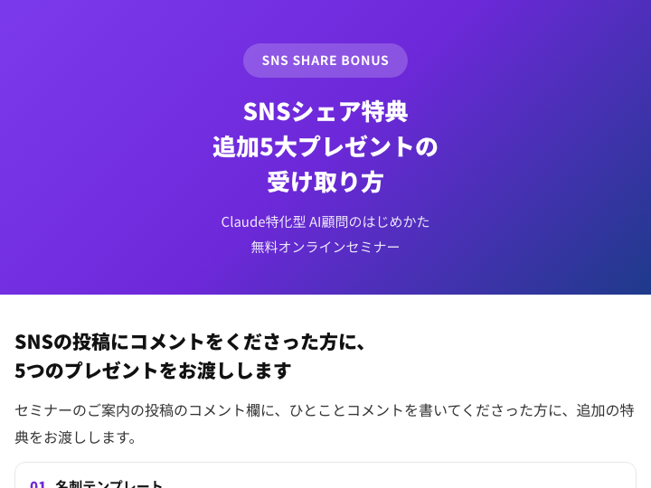
SNSシェア特典の受け取り方（動画→コメント→公式LINE）
ページ・原稿を開く ↓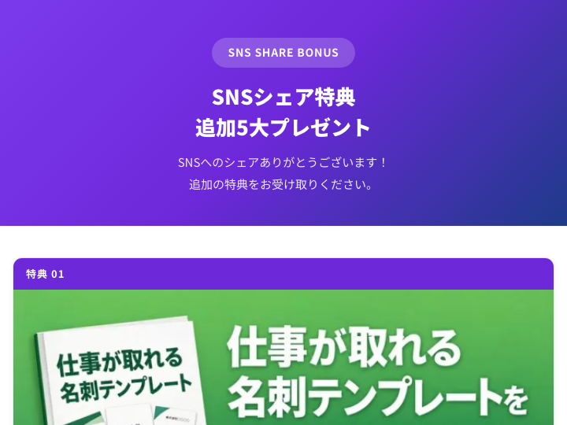
SNSシェア特典 5大プレゼント（受け取り方を確かめた方へ）
ページ・原稿を開く ↓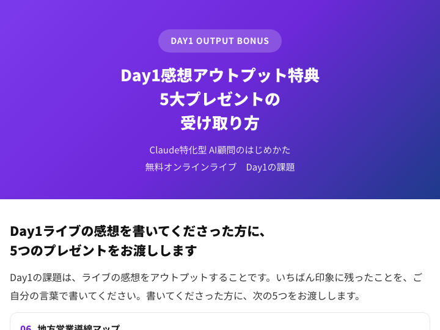
Day1感想特典の受け取り方（感想→公式LINE）
ページ・原稿を開く ↓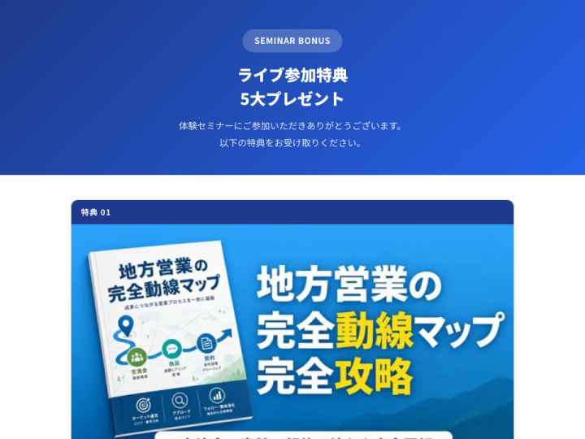
Day1感想アウトプット特典 5大プレゼント（公式LINEで個別に送る）
ページ・原稿を開く ↓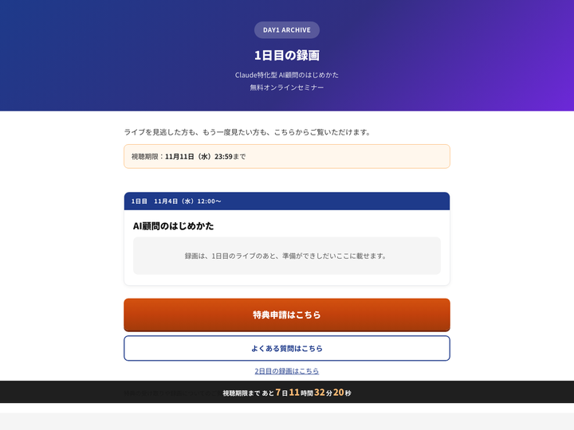
1日目の録画（特典申請へつなぐ）
ページ・原稿を開く ↓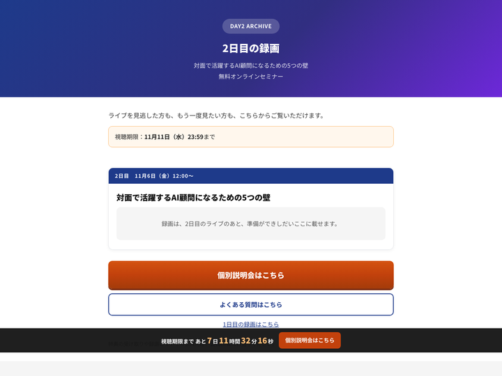
2日目の録画（個別説明会へつなぐ）
ページ・原稿を開く ↓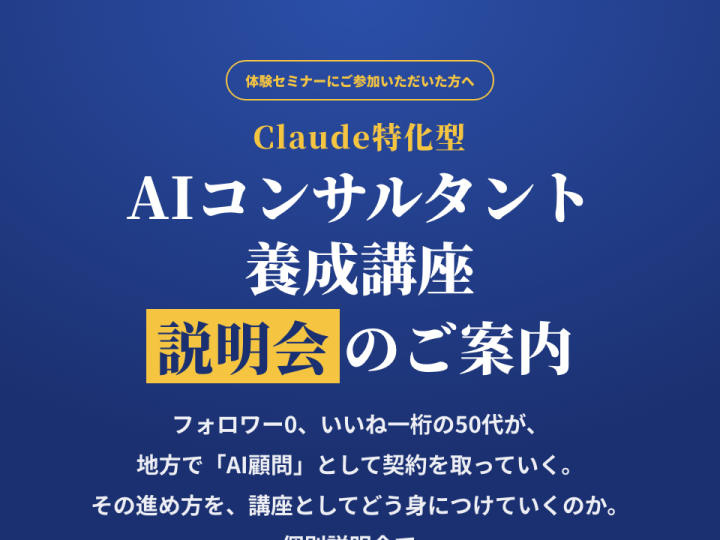
個別説明会への申込案内
ページ・原稿を開く ↓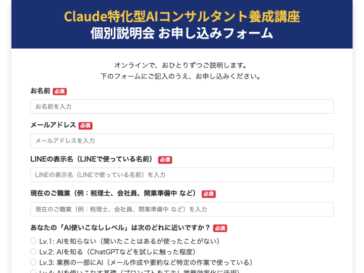
個別説明会のお申し込み
ページ・原稿を開く ↓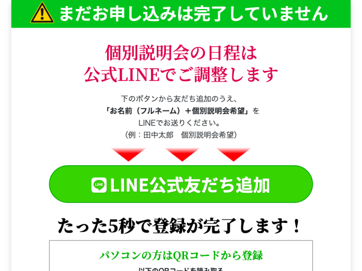
公式LINEへの登録
ページ・原稿を開く ↓オプトインからサンキューページ2までは、取得した公開ページの移動先で確認した流れです。オープンチャットから先は、第2期の制作原稿（LINE配信・特典配布ページ・個別説明会ページ）に書かれた導線です。体験セミナーは2日間（1日目 11月4日（水）12:00「AI顧問のはじめかた」・2日目 11月6日（金）12:00「対面で活躍するAI顧問になるための5つの壁」）です。個別説明会の受付は11月4日から11月11日まで（2026-10-26 片岡守MTG）で、申込ページ → お申し込みフォーム → 自動返信メール → サンキューページ（LINE登録）→ LINE自動返信 の順に進みます（2026-11-01 にUTAGEへ設定）。
ライド（Meta広告）とリード（ハウス）の違い
| 項目 | ライド（Meta広告） | リード（ハウス） |
|---|---|---|
| オプトインLP | the-lead14.com/…/ai-komon-rideflp01 | the-lead20.com/…/ai-komon-leadflp01 |
| サンキューページ | the-lead14.com/…/ai-komon-ridethxform1 | the-lead20.com/…/ai-komon-leadthxform |
| サンキューページ2 | the-lead14.com/…/ai-komon-ridethxline2 | the-lead20.com/…/ai-komon-leadthxline |
| 登録データのパラメータ | ride-flp01 |
lead-flp01 |
| 掲載している文章 | 同じ | 同じ |
工程と素材種別
| 工程 | 種別 | 件数 | 入口 |
|---|---|---|---|
| 広告 | 動画広告台本 | 3件 | 動画広告台本を開く |
| オプトインLP | ページ | 2件 | ページを開く |
| オプトインLP | 登録データ書き出し | 2件 | 登録データ書き出しを開く |
| オプトインLP | ステップメール | 8件 | ステップメールを開く |
| サンキューページ | ページ | 2件 | ページを開く |
| サンキューページ | 挨拶動画 | 1件 | 挨拶動画を開く |
| サンキューページ2（LINE案内） | ページ | 2件 | ページを開く |
| サンキューページ2（LINE案内） | 自動返信メール | 1件 | 自動返信メールを開く |
| サンキューページ2（LINE案内） | リマインドメール | 3件 | リマインドメールを開く |
| サンキューページ2（LINE案内） | 入れない方への案内 | 1件 | 入れない方への案内を開く |
| 体験セミナー | セミナースライド | 2件 | セミナースライドを開く |
| 体験セミナー | LINEオープンチャット配信 | 26件 | LINEオープンチャット配信を開く |
| 体験セミナー | 手動配信メール | 6件 | 手動配信メールを開く |
| 体験セミナー | 特典配布ページ | 4件 | 特典配布ページを開く |
| 体験セミナー | SNS拡散投稿 | 4件 | SNS拡散投稿を開く |
| 体験セミナー | 公式LINE返信文 | 1件 | 公式LINE返信文を開く |
| 体験セミナー | 日付入り投稿 | 34件 | 日付入り投稿を開く |
| 体験セミナー | 投稿カレンダー | 1件 | 投稿カレンダーを開く |
| 体験セミナー | ノート | 2件 | ノートを開く |
| 体験セミナー | 配信一覧 | 1件 | 配信一覧を開く |
| 体験セミナー | 録画ページ | 3件 | 録画ページを開く |
| 個別説明会 | 申込ページ | 1件 | 申込ページを開く |
| 個別説明会 | お申し込みフォーム | 1件 | お申し込みフォームを開く |
| 個別説明会 | 自動返信メール | 1件 | 自動返信メールを開く |
| 個別説明会 | サンキューページ | 1件 | サンキューページを開く |
| 個別説明会 | LINE自動返信 | 1件 | LINE自動返信を開く |
| 個別説明会 | 説明会スライド | 1件 | 説明会スライドを開く |
配信の見取り図
| きっかけ | 媒体 | 時期 | 原稿 |
|---|---|---|---|
| オプトインLPで登録 | メール | 登録直後〜3日目21:00（8通） | M00から順に |
| サンキューページでアンケートに回答 | メール | 回答直後（1通） | アンケート回答直後 |
| サンキューページでアンケートに回答 | メール | 翌日8:00〜2日後20:00（3通） | M01から順に |
| 各クールのアンケート回答者 | メール（手動の一斉配信） | 1日目の朝〜締切の翌朝（6通） | M01から順に |
| LINEオープンチャットに参加 | LINEオープンチャット | 10月28日〜締切の翌朝（日付入り投稿） | 投稿カレンダー・L23から順に |
| LINEオープンチャットに参加 | LINEオープンチャット | ライブの10日前〜3日後（ひな形23通） | L00から順に |
| 個別説明会のお申し込みフォームを送信 | メール | 送信直後（1通） | K01 自動返信メール |
| サンキューページから公式LINEを友だち追加 | LINE | 友だち追加直後（1通） | K02 LINE自動返信 |
メールとLINEは1通ずつ別のページです。各ページの下にある「前後の配信」から、配信順にたどれます。配信原稿は制作済みです。UTAGEとLINEオープンチャットの配信設定は、この素材集では確認していません。
第2ファネル：片岡守 1on1オンライン相談会（AI顧問 はじめかた相談会）
第1ファネルの締切翌朝のお礼のあと、6日間の配信（LINEオープンチャットとメール。1〜3日目で不安を言葉にし、4日目から相談会ページを案内）→申込後の自動返信メール→LINE登録ページ→LINE自動返信の順です。日付と締切はクールごとに差し替えます。
第2ファネルの全体フロー
第1ファネルのお礼の翌日から、6日間の配信（1〜3日目で不安を言葉にし、4〜6日目で相談会を案内）を経て、申込後のLINE登録へ進みます。
6日間の配信 → 申込
ページ・原稿を開く ↓公式LINEへ登録し、日程を調整
ページ・原稿を開く ↓工程と素材種別
| 工程 | 種別 | 件数 | 入口 |
|---|---|---|---|
| 第2ファネル：片岡守 1on1オンライン相談会 | 配信LINE（6日間） | 7件 | 配信LINE（6日間）を開く |
| 第2ファネル：片岡守 1on1オンライン相談会 | 配信メール（6日間） | 6件 | 配信メール（6日間）を開く |
| 第2ファネル：片岡守 1on1オンライン相談会 | 相談会ページ | 1件 | 相談会ページを開く |
| 第2ファネル：片岡守 1on1オンライン相談会 | 申込後メール | 1件 | 申込後メールを開く |
| 第2ファネル：片岡守 1on1オンライン相談会 | LINE登録ページ | 1件 | LINE登録ページを開く |
| 第2ファネル：片岡守 1on1オンライン相談会 | 申込後LINE | 1件 | 申込後LINEを開く |
確認日と取得方法
- UTAGEの公開ページは 2026-11-01 18:54、共有用ページ（Vercel）は 2026-11-05 17:53 に取得した本文を載せています。
- 書き出しシートは同日に取得し、登録者の個人情報を伏せて列の構成だけを載せています。
- 配信原稿と台本は、第2期フォルダの制作原稿から全文を載せています。